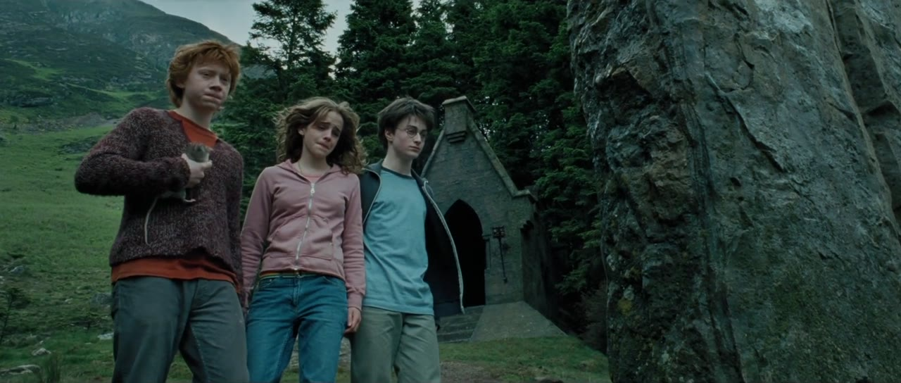
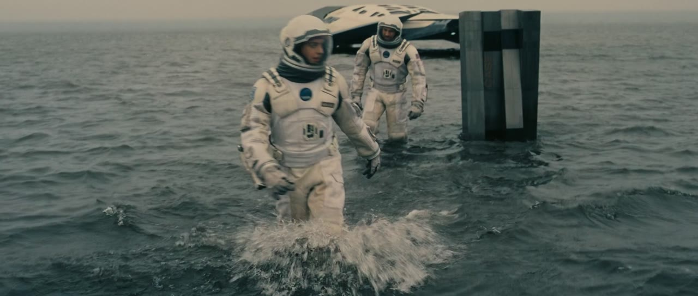
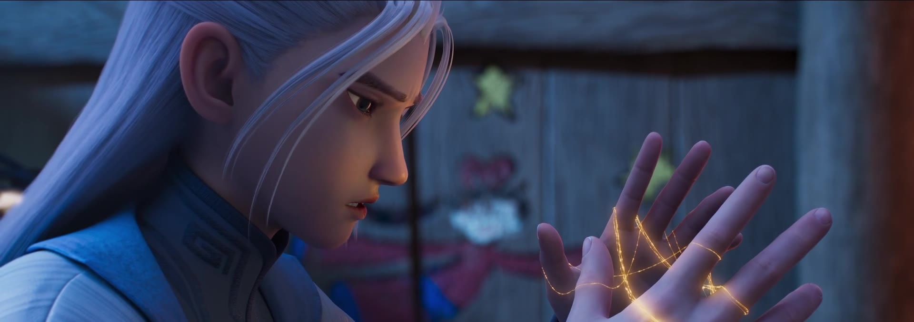
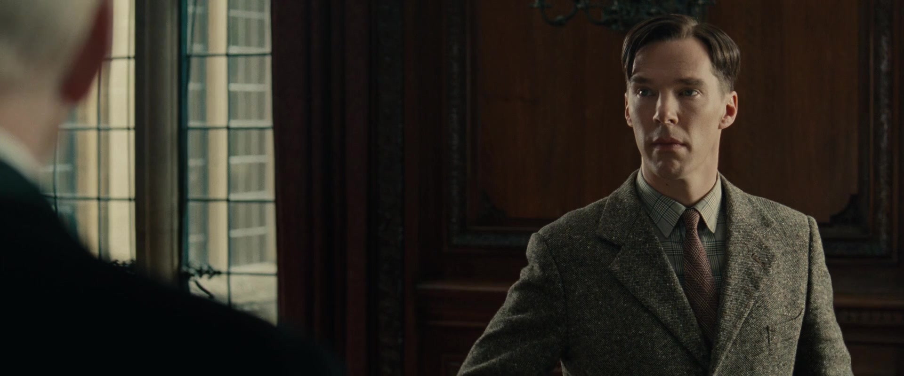
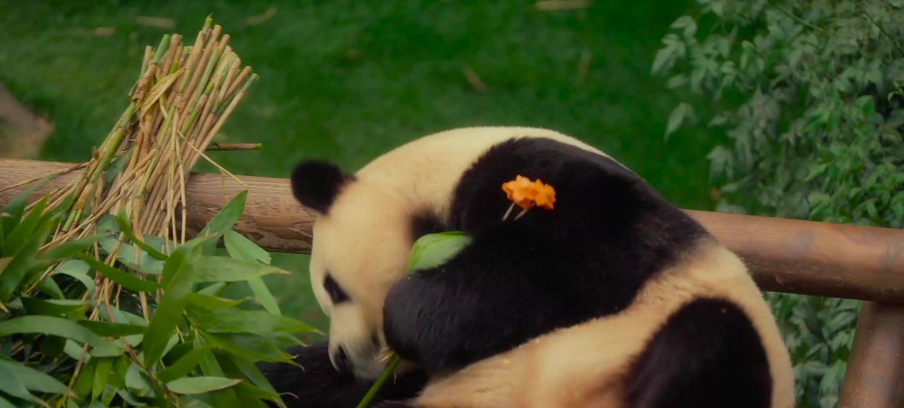

A Large-Scale Dataset and Benchmark for Multi-Shot Long-Form Cinematic Audio-Video Generation
1Shanghai Jiao Tong University 2University of Electronic Science and Technology of China 3Zhejiang University 4The University of Tokyo 5Nanyang Technological University





The fidelity and structural diversity of training datasets fundamentally determine the capabilities of video generation models. While commercial systems show remarkable ability to generate cinematic narratives, the progress of open-source models remains limited by the scarcity of high-quality training data. To bridge this gap, we introduce CineDance-1M, a large-scale, open research Text-to-Audio-Video (T2AV) dataset designed specifically for multi-shot, long-form joint audio-video generation. Averaging 92.8 seconds and 24.2 continuous shots per video, it provides configurable, structured annotations for both audio and video modalities. This exceptional quality is achieved through a rigorous three-stage curation pipeline: (i) diverse sourcing and comprehensive cleansing, (ii) film-theory-inspired narrative parsing, and (iii) hierarchical dual-modal captioning.
For a comprehensive assessment, we propose CineBench, featuring a diverse prompt suite and a six-dimensional, human-aligned metric system tailored for complex narrative audio-video evaluation. Furthermore, we adapt LTX-2.3 into CineDance-LTX, which improves imaging quality from 0.56 to 0.68, reduces WER from 0.66 to 0.52, improves Sync-C from 1.11 to 1.53, and increases cross-shot identity consistency from 0.23 to 0.30 over the LTX-2.3 baseline, validating the effectiveness of both CineDance-1M and our training strategy. We anticipate that this work will serve as a solid foundation for accelerating future research in multi-shot, long-form joint audio-video generation.
CineDance-1M targets the missing training unit for modern cinematic generation: not isolated short clips, but long audio-video sequences with consistent shot structure, aligned sound, and reusable annotations. The curation pipeline consists of three stages: data preparation and quality assessment, bottom-up multi-shot narrative parsing, and configurable structured dual-modal annotation.

CineDance-1M is the only 1M-scale dataset in this comparison with 1080p resolution, long-form multi-shot sequences, all-native audio, and structured audio-video annotations.
| Dataset | Res. | Avg. dur. | Avg. shots | Shot caps. | Audio | Audio ann. | Cap. len. | Total dur. | Clips | Year |
|---|---|---|---|---|---|---|---|---|---|---|
| HowTo100M | 240p | 3.6s | 1 | None | None | None | 4 | 134.5Khr | 136M | 2019 |
| HD-VILA-100M | 720p | 13.4s | 1 | None | None | None | 32.5 | 371.5Khr | 103M | 2022 |
| Koala-36M | 720p | 13.6s | 1 | None | None | None | 202.3 | 137Khr | 36M | 2024 |
| VIDGEN-1M | 720p | 10.6s | 1 | None | Partial | None | 89.3 | 2.9Khr | 1M | 2024 |
| MiraData | 720p | 72.1s | 7.15 | None | None | None | 319 | 6.6Khr | 330K | 2024 |
| LVD-2M | 720p | 20.2s | 1.86 | None | None | None | 88.8 | 14.6Khr | 2.1M | 2024 |
| OpenHumanVid | 720p | 4.6s | 1 | None | All | None | 99.7 | 12Khr | 16M | 2025 |
| OpenS2V-5M | 720p | 5.6s | 1 | None | Partial | None | 312.06 | 5.8Khr | 3.75M | 2025 |
| UltraVideo | 4K/8K | 5.3s | 1.17 | None | No | None | 824.3 | 62hr | 42K | 2025 |
| OpenVid-1M | 720p | 7.2s | 1 | None | Partial | None | 126.5 | 2.1Khr | 1M | 2025 |
| CineTrans | 720p | 10.7s | 2.53 | 2 | None | None | 250.78 | 752hr | 252K | 2025 |
| SpeakerVid-5M | 1080p | 8.3s | 1.27 | None | All | ASR | 20.69 | 11.6Khr | 5.07M | 2025 |
| CineDance-1M | 1080p | 92.8s | 24.2 | 22 | All | Structured | 6496.3 | 26.3Khr | 1M | 2026 |

CineBench evaluates whether a model can synthesize temporally ordered multi-shot sequences from structured conditions. It contains 1,000 test cases stratified by theme/style, duration and shot count, and generation difficulty. The benchmark covers 10s with 2-3 shots, 30s with 4-9 shots, and forward-looking 60s with 10-20 shots.

We adapt LTX-2.3 into CineDance-LTX as a robust open baseline for multi-shot long-form audio-video generation. The model uses the native joint audio-video backbone while learning shot-transition capability, subject and environment consistency, and structured prompt response from CineDance-1M.
The training strategy uses visual-temporal reference scaffolds as optimization aids, then progressively removes them so the model can retain multi-shot organization under reduced inference conditions.
Click a still to open the case. Click a shot to seek the cut.
Structured prompts in, multi-shot audio-video out. Each case below is a CineDance inference result, shown with the hierarchical character and shot script used at generation time.
@misc{chen2026cinedancenextgenerationmultishotlongform,
title={CineDance: Towards Next-Generation Multi-Shot Long-Form Cinematic Audio-Video Generation},
author={Yuheng Chen and Teng Hu and Yuji Wang and Qingdong He and Zhucun Xue and Qianyu Zhou and Jason Li and Lizhuang Ma and Jiangning Zhang and Dacheng Tao},
year={2026},
eprint={2606.09639},
archivePrefix={arXiv},
primaryClass={cs.CV},
url={https://arxiv.org/abs/2606.09639},
}